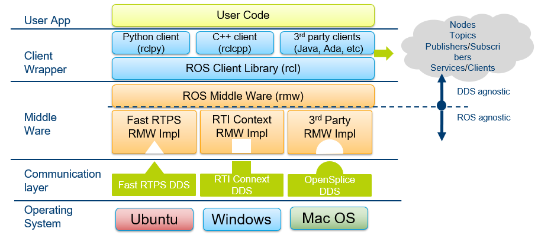
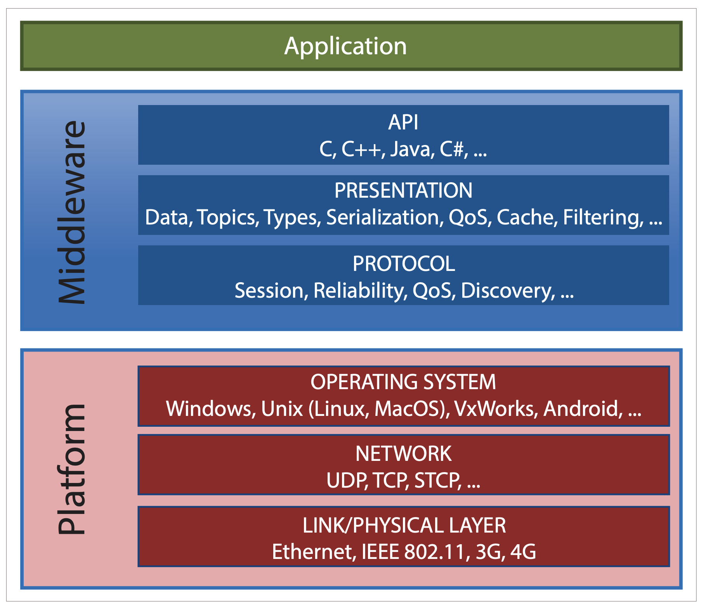
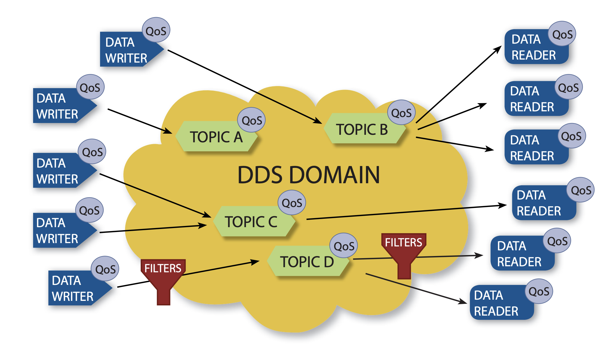

进程间通讯¶
在机器人软件系统中，进程间通信是最基础、也是最关键的能力之一。常见的做法是直接采用现成的通信框架，例如 ROS、DDS 或 ZMQ。它们都很成熟，也都在工业界和研究领域被广泛使用。
但是，如果系统边界只限定在单个机器人本体内部，并且不考虑多机器人协同、远程控制或分布式计算，那么这些框架虽然能用，却往往不是机器人主机内通信的最优选择。对于这类场景，更重要的目标通常是：高频通信、低延迟、低抖动、少拷贝、可预测的实时性、面向大带宽数据的高效共享
本节先简要介绍 ROS、DDS 和 ZMQ 的设计定位，再说明它们为什么并不完全适合机器人主机内通信这一特定问题。
1. ROS：面向机器人生态的通信框架¶
ROS 更准确地说，不只是一个通信库，而是一整套机器人软件生态。它提供了节点、Topic、Service、Action、参数系统、工具链、调试工具、可视化工具以及大量现成的软件包，极大降低了复杂机器人系统的开发门槛。ROS 2 建立在 DDS/RTPS 之上，由后者提供发现、序列化和传输等中间件能力，因此它本身更适合承担机器人软件集成框架的角色，而不仅仅是一个主机内消息通道。

从架构上看，ROS 2 在用户代码和底层 DDS 之间加入了多层抽象，包括客户端库、rcl、rmw 以及具体的 DDS 实现。这样的设计带来了良好的可移植性和生态兼容性，但也意味着主机内数据传输路径更长，系统中会有更多抽象层、更多配置项，以及更多潜在的序列化与调度开销。
ROS 的优势主要体现在：
- 快速搭建复杂机器人系统
- 复用导航、SLAM、MoveIt、RViz 等成熟生态
- 统一消息接口与工具链
- 方便跨模块、跨设备集成
- 适合研发验证、系统集成和功能扩展
如果只关注机器人本体内部通信，ROS 的问题不在于不能用，而在于不是最省成本、最高性能的方案：
- 抽象层较多。从用户节点到底层传输之间存在多层封装，链路相对较长。
- 更强调通用性，而不是极致低延迟。ROS 需要兼顾跨语言、跨进程、跨主机、跨平台以及生态兼容性，这些目标会天然增加系统复杂度。
- 对高频控制闭环不够直接。对于 IMU、关节状态、控制指令这类高频小消息，或者图像、深度图、点云这类大消息，主机内往往更希望采用最短路径进行共享，而不是沿用面向分布式系统设计的完整通信栈。
- 实时性优化成本高。ROS 2 在工业实时场景下通常需要结合底层 DDS 配置、线程调度与 CPU 亲和性等手段额外调优。
因此，ROS 更适合作为机器人软件生态与系统集成框架，而不是机器人主机内极致性能通信的最终形态。
2. DDS：面向分布式实时系统的数据中间件¶
DDS（Data Distribution Service）是 OMG 定义的数据分发中间件标准。它位于操作系统与应用之间，用来屏蔽底层网络传输、发现机制、QoS 管理、协议细节和数据格式，从而让不同语言、不同操作系统、不同硬件平台上的应用能够交换数据。

DDS 中间件负责处理 API、数据类型、序列化、QoS、缓存、过滤、会话、可靠性、发现机制等内容，并向下覆盖操作系统、网络与链路层。这说明 DDS 的设计目标非常明确：它是为异构、分布式、可扩展、可配置的实时系统准备的。

DDS 采用数据中心化模型，通过 Topic、DataWriter、DataReader、QoS 和过滤器进行数据共享；并且提供动态发现能力，参与者既可以位于同一台机器，也可以分布在网络中的不同节点上。
从这个角度看，DDS 的强项是：
- 分布式节点自动发现
- 跨机器、跨语言、跨平台通信
- 丰富的 QoS 策略
- 面向复杂系统的可扩展性
- 统一的数据分发模型
DDS 的问题并不是性能差。恰恰相反，它本来就是为低延迟、高可靠、实时系统设计的。但对于单机机器人内部通信，DDS 往往能力过强：
- 为分布式问题付出了额外复杂度。动态发现、QoS 协商、跨平台兼容、网络协议适配等设计，在分布式环境中很有价值，但在单机内部常常不是核心需求。
- 配置与调优成本较高。Topic、QoS、可靠性策略、历史缓存、过滤规则、发现机制等，都会增加系统理解与维护成本。
- 通信路径不够短。如果数据的生产者和消费者都在同一台机器上，那么很多网络抽象、协议语义和通用中间件逻辑其实可以被简化，甚至直接绕开。
- 不一定最适合大块共享数据。对于图像、深度图、点云这类大数据，机器人主机内更理想的方式往往是共享一份内存，由多个消费者直接读取，而不是让通用中间件承担尽可能多的数据分发语义。
因此，DDS 很强，但它解决的是分布式实时数据分发问题，而不是单机机器人内部最短路径数据共享问题。
3. ZMQ：轻量消息传输库¶
相比 ROS 和 DDS，ZMQ（ZeroMQ）更加轻量。它本质上是一个高性能消息传输库，提供了多种通信模式，例如请求/应答、发布/订阅、Push/Pull、Dealer/Router。
ZMQ 的优点是接口简洁、部署方便、上手快，在工程上很适合快速构建模块间通信原型。对于很多工具类程序、边缘模块、网关模块甚至部分后台系统，ZMQ 都是一个非常实用的选择。
ZMQ的优势是：
- API 简单
- 不强绑定机器人生态
- 支持多种套接字模式
- 适合快速开发和模块解耦
- 跨进程、跨主机都比较方便
如果把目标限定在机器人主机内部的高频实时通信，ZMQ 也存在明显局限：
- 本质仍然是消息传输模型。它擅长把消息送过去，但不擅长让多个消费者共享一块大内存。
- 对大数据共享不够理想。图像、深度图、点云等大块数据更适合零拷贝式共享内存访问，而不是频繁做消息搬运。
- 缺少面向机器人实时控制的数据语义。它没有像 DDS 那样完整的数据模型和 QoS，也没有像 ROS 那样现成的机器人生态；如果要做复杂的机器人数据总线，很多能力需要自己补齐。
- 实时性仍然受消息队列路径影响。对高频小包控制消息来说，它未必比为单机场景专门设计的共享内存加无锁队列方案更直接。
因此，ZMQ 适合作为通用工程通信工具，但并不天然适合作为机器人主机内高性能数据共享中间件。
4. 这三类方案的共同问题¶
从机器人主机内通信的视角看，ROS、DDS、ZMQ 有一个共同点：它们都首先把问题建模成消息传递。
这种思路在分布式系统中非常合理，因为节点可能位于不同进程、不同机器、不同网络环境中，通信天然需要统一抽象、序列化、发现、路由、QoS 或缓冲机制。但如果系统只运行在单个机器人本体内部，很多问题会变得更简单：
- 通信双方运行在同一台机器
- 地址空间虽然隔离，但物理内存共享是可实现的
- 不需要跨网络发现
- 不需要为异构平台和远端节点付出额外抽象成本
- 大量数据其实更适合共享访问，而不是发送消息
在这种场景下，主机内通信更合理的核心目标通常是：
- 少拷贝
- 低延迟
- 低抖动
- 固定开销
- 高带宽
- 易于分析最坏情况
而这些目标往往更接近共享内存、无锁队列、预分配缓冲区、固定拓扑通信等设计思路。
5. 为什么我们选择自研 Robot-IPC¶
基于以上分析，我们没有直接将 ROS、DDS 或 ZMQ 作为机器人主机内通信的最终方案，而是设计了一套更轻量的通信中间件：Robot-IPC。
Robot-IPC 的设计前提非常明确：
- 只服务于单机器人本体内部
- 不承担跨机器分布式通信职责
- 不追求通用消息中间件的全部能力
- 优先保证控制链路与高带宽数据链路的性能
因此，Robot-IPC 采用共享内存作为核心通信机制，并围绕机器人本体内部的典型数据流进行设计，例如：
- 高频小消息：IMU、关节状态、控制指令
- 大带宽消息：图像、深度图、点云
- 多消费者共享：定位、导航、控制、可视化同时读取同一份数据
与通用分布式框架相比，这样的设计可以避免不必要的协议层、发现机制和通用抽象，把数据路径尽可能缩短，从而获得更低延迟、更高带宽以及更稳定的主机内通信表现。
参考资料¶
- Intel ECI, Robot Operating System Software: https://eci.intel.com/docs/2.5/components/ros.html
- Twin Oaks Computing, DDS Brochure: https://www.twinoakscomputing.com/datasheets/DDS-Brochure.pdf